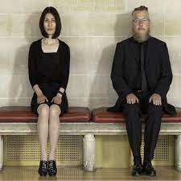

YoHa’s English translation is “Aftermath". The artist group consists of Graham Harwood and Matsuko Yokokoji. The two have worked together since 1994. Their work is used as a mode of inquiry into the fields of health, war, and death. They write: “The focus of our enquiry is where the flows of power can be reconfigured by the ambiguity of art, not necessarily to make art but to make use of it within a wider enquiry. Critical Technical Practice and the use of art allows for connections to be remade, renegotiated outside the rhetoric or logics that govern the space made possible by the interaction of technical individuals, humans and the wider environment.”
Harwood began his work as an artist during the 1980’s. During this time, he produced the UK’S first computer-generated graphic novel, "If Comics Mental", and was widely published in graphic journals in the USA, Canada, Italy and France. He is best known for his collaborative work “Rehearsal of Memory” (1995).
Yokokoji freelanced as a graphic designer and became an art director for a marketing company. She studied computer graphics and worked for Harwood’s “Rehearsal of memory”.
